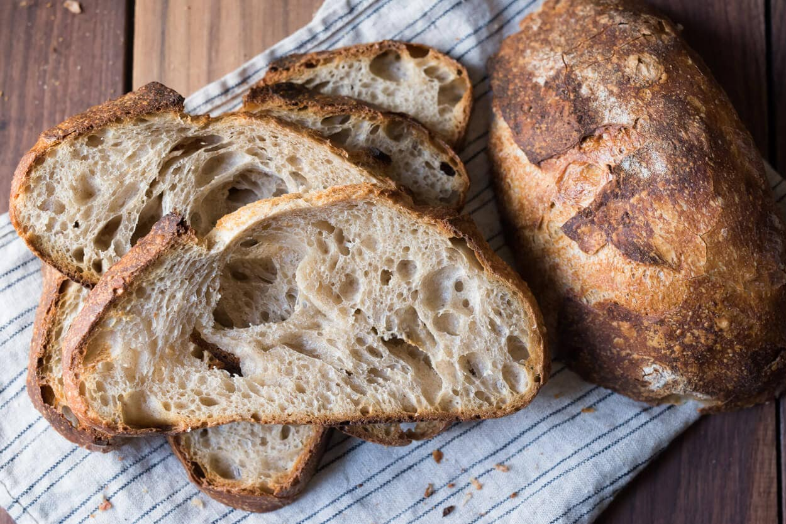

Sourdough Bread

Description
Sourdough bread is a staple in my household also. Started with an random youtube video on how sourdough starters work and now I am making it all the time!
Ingredients
- 100g of sourdough starter
- 450g Strong white bread flour
- 310g Room temperature water
- 8g Salt
Steps
- Take 100g of your starter out of the pot and put in in a large bowl, put your scraping pot in the fridge for next time. Add the water flour and salt and mix it together into a dough with your dough scraper. Mix for a minute or so to make sure everything is combined. Let this mixture rest and soak for 30 minutes.
- First Fold - Spray the work surface with water, and the top of your dough. Turn the dough out onto the wet surface upside down. Work around the dough pinching a piece with your finger and thumb, stretching it out and folding it back over the dough making a ball. Around 12 folds should be enough. Roll the dough back over, smooth side up, return it to the bowl, spray the top with water, cover with a clean cloth and leave to rest for 2 hours at room temperature.
- Second Fold - After the dough has rested it should have puffed up slightly already. Spray the table and dough again with water. Turn the dough out and reshape into a ball. 6 stretches and folds should be enough this time, roll the dough over with the smooth side on top and tuck everything underneath with your hands. Return the dough to the bowl for a further 2 hours.
- Third Fold - After the dough has rested for this second time there should be clear signs of the dough rising, Stretch and fold the dough once more exactly like the last time, and return the dough to the bowl to rest for 1 hour.
- Pre-shape - This time after resting its time to pre-shape the dough. Dust your surface with flour, turn out your dough upside down onto the surface. If you have doubled the recipe to make two loaves, divide it into two at this point with the flat side of your dough scraper. Shape the dough into a ball really quite tight without tearing it. Rest on the side for 1 hour covered with a cloth.
- Final Shape - In the final shaping the aim is to create a tight structure without degassing the dough too much. So be delicate with the folds but still creating tension. Dust your work surface with a little flour, slide your dough scraper underneath and turn the dough upside down onto a lightly dusted surface. Let it relax into a circle. Pick up the side edges one by one, stretching out very slightly and folding over the dough, one over the top of the other. Roll the dough from the top edge towards you into a sausage and stick it onto the sticky patch closest to you, pinching the seam to stick in place. When you are done, dust it well with semolina or a wholemeal flour, and dust an oval banneton basket too. Place the dough in the basket upside down (seam side up). If you don’t have a basket, line a colander or bowl with a cloth and dust it well.
- Final Rest - At this stage rest your dough in the fridge uncovered to prove nice and slowly overnight.
- When you are ready to bake, remove your loaf from the fridge and let it rest on the kitchen side while the oven preheats. It should show clear signs of inflation, don’t expect huge growth but certainly it should have plumped up since you put it in the fridge. Preheat the oven to 230°C fan/456°F/gas mark 8 with a baking stone on the middle shelf and a deep tray on the bottom. Boil the kettle too.
- Turn out the loaf out onto a floured peel, make a cut in the top with a grignette and slide it onto the baking stone. Pour the hot water from the kettle into the tray to create steam and shut the door.
- Bake for 15 minutes, then turn down the heat to 190°C fan/374°F/gas mark 5 and bake for a further 20-25 minutes.
- Allow to cool completely on a wire rack before slicing.